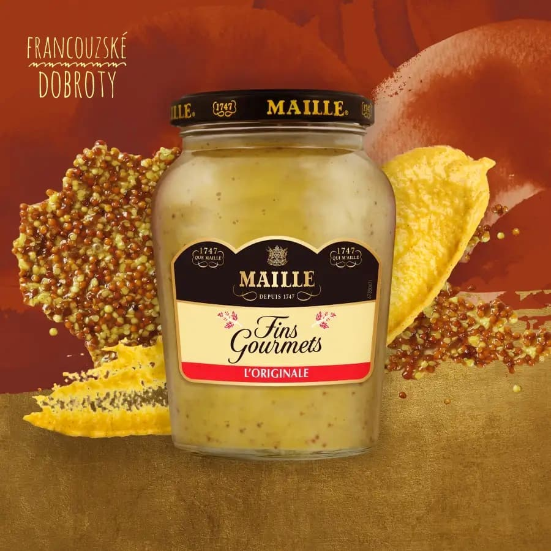

Omáčky podľa @francouzskedobroty — Normy Jedál
Maille moutarde Fins Gourmets - Gurmánská dijonská hořčice s nádechem bílého vína 🇫🇷
Specialitou hořčice Fins Gourmets Maille je jedinečná kombinace dijonské hořčice a staromódní hořčice vylepšená nádechem bílého vína. 🥂
Jeden detail může změnit chuť Vašeho pokrmu. Francouzská gurmánská hořčice může odhalit duši jídla. Vedeni vášní a snahou o dokonalost navrhují kuchaři Maison Maille každý recept jako dílo kulinářského umění. 🍽️
Založil ji otec a syn. Maille používá nejkvalitnější ingredience a připravuje gurmánské hořčičné příchutě. Jejich posedlost: zkoumat, vybírat a kombinovat ty nejlepší ingredience, které každému receptu dodají duši. Jsou dědici tradice a kreativity pěstované více než 270 let.
Maille hořčice je dotek, který probouzí a odhaluje krásu pokrmu. Dotek kreativity, který umocňuje chuť, zvyšuje potěšení a uspokojuje i ty nejnáročnější labužníky ... Produkty Maille vás zve na cestu do světa chutí.
Vyrobeno ve Francii. 🇫🇷
Hmotnost: 340g
Cena: 109kč
#dijonskahorcice#horcice#francouzskahorcice#grilovani#piknik#oslava#maso#omacky#skvelachut#zazitek#tradice#kvalitniingredience#gurmanskyzazitek#francouzskedobroty#bilevino#dokonalost#francie#chutFrancie